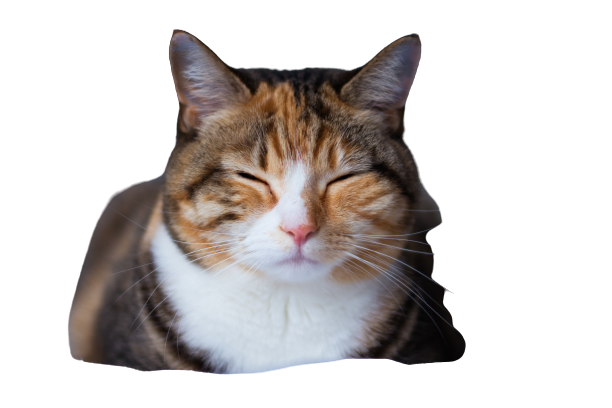

Kenali Penyakit Berbahaya Pada Kucing
Memelihara kucing bukan hal yang sulit, namun bukan berarti tidak lepas dari ancaman-ancaman penyakit baik dari virus maupun bakteri dan jamur.
Adalah Sebuah Organisasi untuk pecinta kucing atau pun seseorang diluar sana untuk sadar dan peduli terhadap kucing, disini kita berbagi pengalaman bagaimana cara menjaga kesehatan kucing, cara perilaku kucing, dan memberikan informasi apabila menemukan kucing dijalanan. Ayo buruan daftar!
Kucing adalah jenis hewan mamalia karnivora yang berasal dari keluarga Felidae. Habitat kucing adalah di darat yang biasanya berbaur dengan manusia sebagai peliharaan dan ada juga yang hidup liar. Setiap kucing biasanya memiliki daerah kekuasaan sendiri. Berdasarkan prilaku kucing saat ini, kucing liar merupakan nenek monyang dari kucing peliharaan. Prilaku kucing senang dengan suasana hangat dan biasanya senang sekali berjemur di bawah hangatnya sinar marahari. Safe Cat bertujuan untuk memberikan kepedulian terhadap hewan terutama kucing karna diluar sana banyak kucing yang terlantar dan penindasan terhadap kucing tidak hanya itu di Safe Cat kita akan berbagi informasi tentang kucing seperti bagaimana cara menjaga kesehatan kucing agar terhindar dari penyakit. Untuk saat ini Safe Cat masih tahap pengembangan jadi, jangan lupa untuk tetap menunggu Safe Cat.
Memelihara kucing bukan hal yang sulit, namun bukan berarti tidak lepas dari ancaman-ancaman penyakit baik dari virus maupun bakteri dan jamur.
Buat kamu yang pelihara atau berencana buat pelihara kucing, ini adalah 4 bahasa tubuh kucing yang wajib kalian pahami supaya hubungan kamu dengan si manis
Kucing adalah hewan yang ramah tetapi beberapa di antaranya sulit untuk didekati. Berikut ini cara mendekati kucing agar mau membuka pertemanan dengan orang baru.
Ayo Bergabung dengan Kami! Kita tunggu di Safe Cat!!